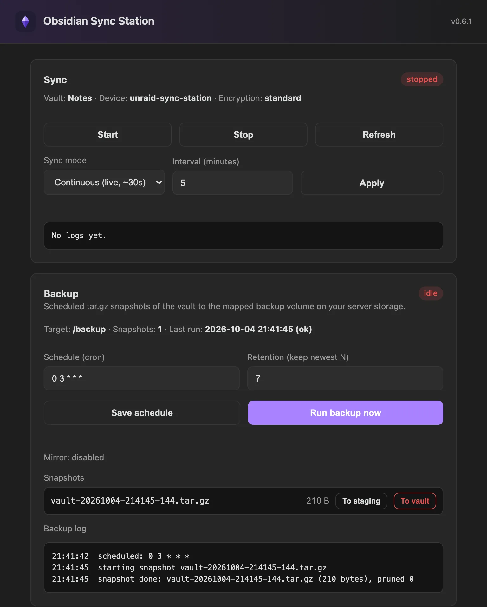
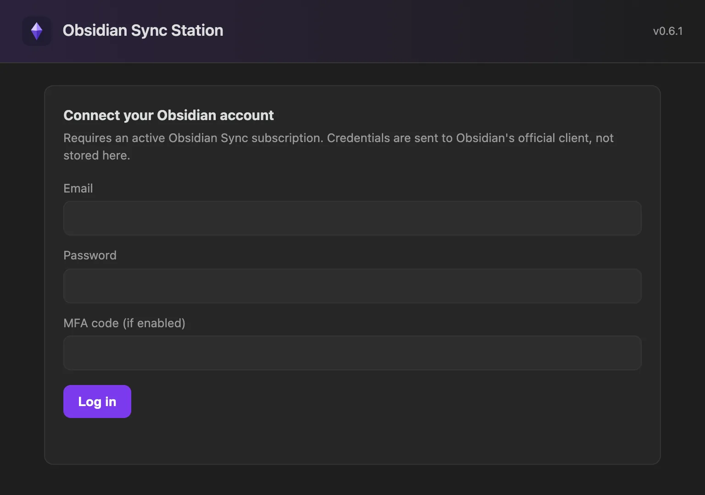

Unraid · Docker · web UI
Your Obsidian vault, synced on your Unraid server.
A small Docker container with a web UI that keeps an Obsidian vault synced using Obsidian's official headless Sync client. No LiveSync or CouchDB, no VNC or GUI container, no third-party sync protocol.
Install on Unraid Source on GitHub
Independent, unofficial project, not affiliated with Obsidian. Requires an active Obsidian Sync subscription.

Install
On Unraid, use Community Applications. Anywhere else, any Docker host works.
Unraid Community Applications
- Open Apps and search for
obsidian-sync-station, then install it. - Adjust the paths.
/vaultshould be its own dedicated share. Set Enable Backup totrueif you want backups and map/backup. Then Apply. - Open the WebUI, set an access password, log in to Obsidian and pick your vault.
Without CA: Docker tab, Add Container, and paste the template URL.
https://raw.githubusercontent.com/benjaminmue/unraid/main/templates/obsidian-sync-station.xmlThe template maps the web UI to host port 8484 by default, because 8080 is often taken on Unraid.
CLI docker run
docker run -d --name obsidian-sync-station \
-p 8484:8080 \
-e DEVICE_NAME=unraid-sync-station \
-e PUID=99 -e PGID=100 -e TZ=Europe/Zurich \
-v /mnt/user/appdata/obsidian-sync-station:/config \
-v /mnt/user/obsidian-vault:/vault \
--restart unless-stopped \
ghcr.io/benjaminmue/obsidian-sync-station:latestCLI Docker Compose
services:
obsidian-sync-station:
image: ghcr.io/benjaminmue/obsidian-sync-station:latest
container_name: obsidian-sync-station
ports:
- "8484:8080"
environment:
- BACKUP=false
- DEVICE_NAME=unraid-sync-station
- PUID=99
- PGID=100
- UMASK=0002
- TZ=Europe/Zurich
volumes:
- /mnt/user/appdata/obsidian-sync-station:/config
- /mnt/user/obsidian-vault:/vault
# only when BACKUP=true:
# - /mnt/user/backups/obsidian:/backup
restart: unless-stoppedPaths and defaults follow the Unraid template. Then open http://<server>:8484.
What it does
Obsidian Sync has no self-hosted server and no REST API. In February 2026 Obsidian shipped an official headless client, the ob CLI. This project wraps it in a web UI and packages it for a server, so a vault stays synced and, if you want, backed up on your own hardware.
- Official sync
- Runs Obsidian's own headless Sync client. Login with email, password and MFA, a vault picker, and an optional end-to-end decryption password.
- Two sync modes
- Continuous, using Obsidian's live watcher (about 30 seconds), or a one-shot sync every N minutes. Supervised with auto-restart, live status and log tail.
- Local backups
BACKUP=trueadds scheduledtar.gzsnapshots with a cron schedule (default0 3 * * *), retention and run-now.- Off-box mirror
MIRROR=truecopies every snapshot to a second volume, pruned by the same retention.- Off-site via restic
- Encrypted backups to a local path or cloud storage (S3, Backblaze B2, SFTP) after each local backup.
- Restore
- Restore a snapshot to a staging folder for inspection, or over the live vault with an explicit confirmation.
- ntfy notifications
- Push messages on successful backups and on backup or sync failures. Access tokens supported for protected servers.
- Unraid file ownership
- Runs as
99:100(nobody:users) withUMASK 0002, so other containers on the share can use the files. Drifted ownership is repaired on start.
First run
- Set an access password for the web UI. It is LAN-only and gated by its own password.
- Connect your Obsidian account. Credentials go to Obsidian's official client.
- Pick the remote vault, choose standard or end-to-end encryption, then link and start sync.
The proprietary ob client is not bundled in the image. The container installs it from the official npm registry on first start, into the /config volume.

Volumes and variables
| Container path | Purpose |
|---|---|
/config | Settings, web UI password hash, ob login and install |
/vault | The synced vault files. Map to a dedicated share. |
/backup | Snapshot target, only when BACKUP=true |
/mirror | Second snapshot target, only when MIRROR=true |
| Variable | Default | Purpose |
|---|---|---|
BACKUP | false | Backups and backup options in the UI |
MIRROR | false | Copy each snapshot to /mirror |
RESTIC_REPOSITORY | none | Enables restic off-site backups |
RESTIC_PASSWORD | none | Encryption password for the restic repository |
NTFY_URL | none | ntfy topic URL, also settable in the UI |
NTFY_TOKEN | none | ntfy access token for protected servers |
DEVICE_NAME | obsidian-sync-station | Label in Obsidian Sync history |
PUID / PGID | 99 / 100 | User and group the container runs as |
UMASK | 0002 | 0664 files, 0775 folders |
FIX_PERMISSIONS | true | Ownership migration and repair on start |
Full reference in the README.
Before you start
- Never run the Obsidian desktop app against the same vault path at the same time. The official client warns that this causes conflicts. Give the container its own dedicated path.
- End-to-end encryption is decrypted locally. With an end-to-end encrypted vault,
obwrites plaintext to/vaultand therefore to backups. Choose your storage accordingly. - Do not expose the web UI to the internet. It holds your Obsidian credentials.